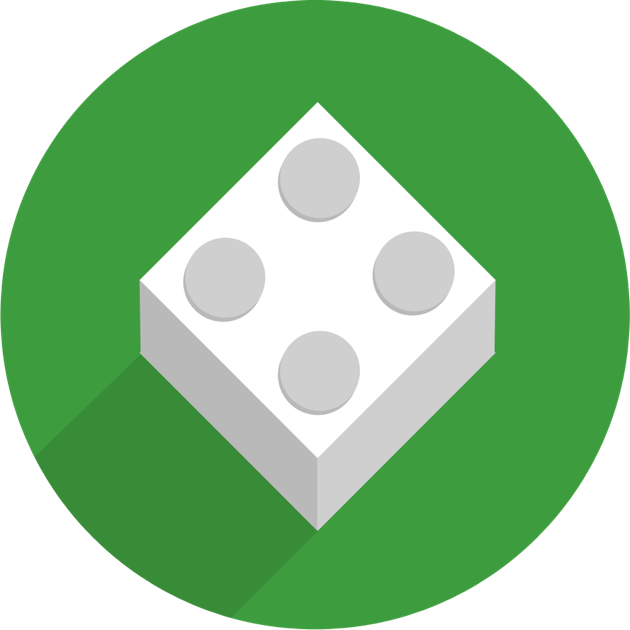

HOW COOL IS THIS?
Guest lectures
Add Relevant Description about the Guest Lecturer and the subject of his lecture. Comment on the duration and the takeaway from the lecture. Keep the description succinct. Two lines at max.
- LECTURER
Walter
- VENUE
Dogra Hall
- DATE
27 Feb
- STARTS
1200Hrs
- ENDS
2200hrs
-

ROBOSAPIENSSomething relevant to robosapiens ltd. added here. Keep the description succinct.
-

SPONSOR 2Something relevant to robosapiens ltd. added here. Keep the description succinct.
-
SPONSOR 3Something relevant to robosapiens ltd. added here. Keep the description succinct.
-
SPONSOR 3Something relevant to robosapiens ltd. added here. Keep the description succinct.
-
SPONSOR 3Something relevant to robosapiens ltd. added here. Keep the description succinct.
-
SPONSOR 3Something relevant to robosapiens ltd. added here. Keep the description succinct.